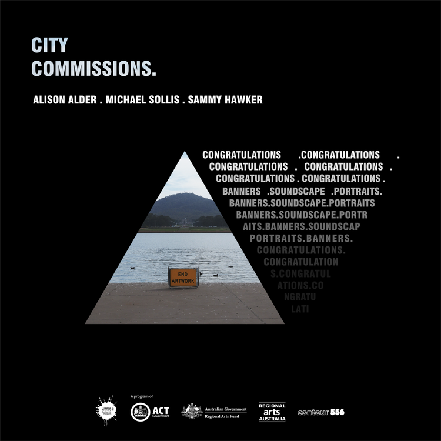

Alison Alder
Alison will work with Hands On Studio artsts. the project will raise awareness about the effects of social isolation and extra difficulties.
The project will create 3 text based prints and banners 8 x 2m with live spoken performances by eight artists.
Michael Sollis
Michael will weave together interviews from immunocompromised families with music inspired by the increasing isolation of the stars.
Working with Capital Region Cancer Relief. Michael will produce an object that will play interviews and sound.
Sammy Hawker
Sammy will work with participants from Headspace Canberra. She will take portraits, then the subjects will manipulate the negative to add elements of their lockdown lives.
The portraits will be displayed at multiple venues around Canberra.